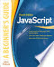
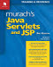

| Web Programming Step by Step | ||
|---|---|---|
| Author: | Martyr Steep, Jessica Miller |  |
| Publisher: | Step by Step Publishing | |
| Edition: | 2nd Edition, 2008 | |
| E-Book: | Download E-Book | |
| Javascript: A Beginner’s Guide | ||
|---|---|---|
| Author: | John Pollock |  |
| Publisher: | McGraw Hill | |
| Edition: | 4th Edition, 2008 | |
| E-Book: | Download E-Book | |
| Murach’s Java Servlets and JSP | ||
|---|---|---|
| Author: | Joel Murach, Michael Urban |  |
| Publisher: | Murach Books | |
| Edition: | 3rd Edition, 2008 | |
| E-Book: | Download E-Book | |